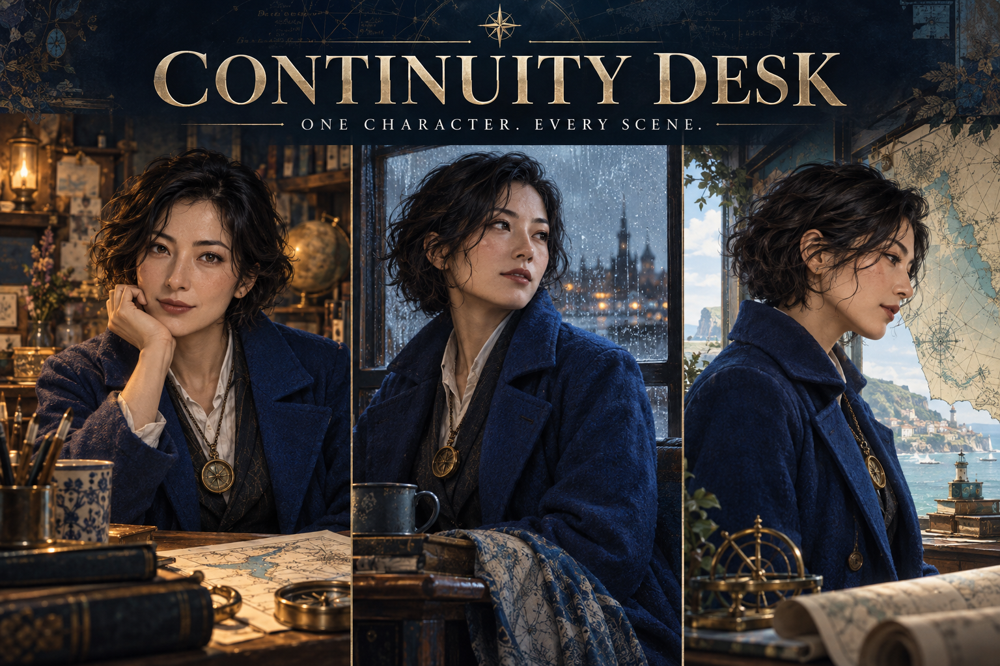

One character canon
Mira is a fictional adult cartographer, aged 30, with short wavy black hair, a cobalt coat and a brass compass pendant. Keep those details fixed.
One scene change
From a quiet atelier, front view → harbor at dusk, left three-quarter view. Only the scene and camera view changed.
Keep: identity, wardrobe, visual style and light. Change: scene and camera view only. Action: relaxed arms. Prop: none. Review the resulting artwork manually.
One contradiction to catch
If the next instruction adds an umbrella and an action needing both hands, decide how the umbrella is supported or remove a prop. A short brief can still contain incompatible directions.
Read the corrected example
Keep the harbor and three-quarter view. Remove the umbrella; let the character hold one folded map in both hands. Make this a new revision from a suitable baseline instead of changing four attributes at once.
Want to use your own character and images?
The full planner lets you save a canon, organize up to six original reference images, check shot changes and explicit prop/hand rules, restore project JSON, and download a handoff ZIP with your unchanged originals.
View Continuity Desk · US$6 before any checkout tax
English interface. Required verified route: Python3 + desktop Chrome. Extract the download, serve its folder locally with the command in README, and open localhost. No account or API key. Direct file:// launch is unverified. No image generation, face matching or legal rights verification. If a text editor and folders already meet your needs, this example is enough.